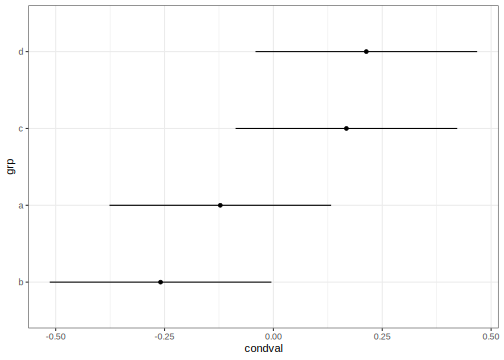
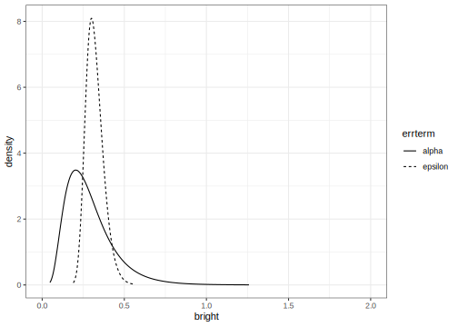
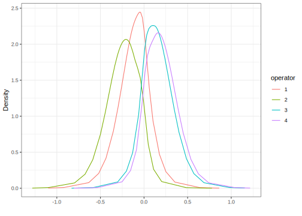
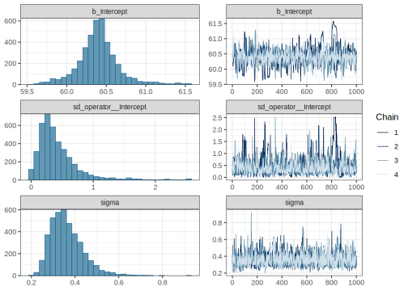

library(faraway)
library(ggplot2)
library(lme4)
library(INLA)
library(knitr)
library(rstan, quietly=TRUE)
library(brms)
library(mgcv)One Way Anova with a random effect
See the introduction for an overview.
This example is discussed in more detail in my book Extending the Linear Model with R
Required libraries:
Data
Load up and look at the data, which concerns the brightness of paper which may vary between operators of the production machinery.
data(pulp, package="faraway")
summary(pulp) bright operator
Min. :59.8 a:5
1st Qu.:60.0 b:5
Median :60.5 c:5
Mean :60.4 d:5
3rd Qu.:60.7
Max. :61.0 ggplot(pulp, aes(x=operator, y=bright))+geom_point(position = position_jitter(width=0.1, height=0.0))
You can read more about the data by typing help(pulp) at the R prompt.
In this example, there are only five replicates per level. There is no strong reason to reject the normality assumption. We don’t care about the specific operators, who are named a, b, c and d, but we do want to know how they vary.
Questions
- Is there a difference between operators in general?
- How much is the difference between operators in general?
- How does the variation between operators compare to the variation within operators?
- What is the difference between these four operators?
We are mostly interested in the first three questions.
Linear model with fixed effects
We start with the simplest analysis although it is not correct. It will be useful for comparisons. We treat the operator as a fixed effect meaning that the analysis refers to these four operators and not to other possible operators. Since we probably don’t care about these particular four operators, this would not be the best choice.
You can use the lm() or aov() functions:
amod = aov(bright ~ operator, pulp)Now test for a difference between operators:
anova(amod)Analysis of Variance Table
Response: bright
Df Sum Sq Mean Sq F value Pr(>F)
operator 3 1.34 0.447 4.2 0.023
Residuals 16 1.70 0.106 We find a statistically significant difference. We can estimate the coefficients:
coef(amod)(Intercept) operatorb operatorc operatord
60.24 -0.18 0.38 0.44 The treatment coding sets operator a as the reference level. The intercept is the mean for operator a and the other estimates are differences in the mean from operator a. We can also test for a difference between pairs of operators:
TukeyHSD(amod) Tukey multiple comparisons of means
95% family-wise confidence level
Fit: aov(formula = bright ~ operator, data = pulp)
$operator
diff lwr upr p adj
b-a -0.18 -0.769814 0.40981 0.81854
c-a 0.38 -0.209814 0.96981 0.29030
d-a 0.44 -0.149814 1.02981 0.18448
c-b 0.56 -0.029814 1.14981 0.06579
d-b 0.62 0.030186 1.20981 0.03767
d-c 0.06 -0.529814 0.64981 0.99108Only the d to b difference is found significant.
We have answered the fourth question stated above. We could make some speculations on the first three questions (what can be said about operators in general) but our analysis was not designed to do this.
Likelihood inference
We use a model of the form:
\[ y_{ij} = \mu + \alpha_i + \epsilon_{ij} \qquad i=1,\dots ,a \qquad j=1,\dots ,n_i, \]
where the \(\alpha_i\) and \(\epsilon_{ij}\)s are normal with mean zero, but variances \(\sigma_\alpha^2\) and \(\sigma^2_\epsilon\), respectively.
The default fit uses the REML estimation method:
mmod <- lmer(bright ~ 1+(1|operator), pulp)
faraway::sumary(mmod)Fixed Effects:
coef.est coef.se
60.40 0.15
Random Effects:
Groups Name Std.Dev.
operator (Intercept) 0.26
Residual 0.33
---
number of obs: 20, groups: operator, 4
AIC = 24.6, DIC = 14.4
deviance = 16.5 We see slightly less variation within operators (SD=0.261) than between operators (SD=0.326).
Hypothesis testing
We can also use the ML method:
smod <- lmer(bright ~ 1+(1|operator), pulp, REML = FALSE)
faraway::sumary(smod)Fixed Effects:
coef.est coef.se
60.40 0.13
Random Effects:
Groups Name Std.Dev.
operator (Intercept) 0.21
Residual 0.33
---
number of obs: 20, groups: operator, 4
AIC = 22.5, DIC = 16.5
deviance = 16.5 The REML method is preferred for estimation but we must use the ML method if we wish to make hypothesis tests comparing models.
If we want to test for variation between operators, we fit a null model containing no operator, compute the likelihood ratio statistic and corresponding p-value:
nullmod <- lm(bright ~ 1, pulp)
lrtstat <- as.numeric(2*(logLik(smod)-logLik(nullmod)))
pvalue <- pchisq(lrtstat,1,lower=FALSE)
data.frame(lrtstat, pvalue) lrtstat pvalue
1 2.5684 0.10902Superficially, the p-value greater than 0.05 suggests no strong evidence against that hypothesis that there is no variation among the operators. But there is good reason to doubt the chi-squared null distribution when testing parameter on the boundary of the space (as we do here at zero). A parametric bootstrap can be used where we generate samples from the null and compute the test statistic repeatedly:
lrstat <- numeric(1000)
set.seed(123)
for(i in 1:1000){
y <- unlist(simulate(nullmod))
bnull <- lm(y ~ 1)
balt <- lmer(y ~ 1 + (1|operator), pulp, REML=FALSE)
lrstat[i] <- as.numeric(2*(logLik(balt)-logLik(bnull)))
}Check the proportion of simulated test statistics that are close to zero:
mean(lrstat < 0.00001)[1] 0.703Clearly, the test statistic does not have a chi-squared distribution under the null. We can compute the proportion that exceed the observed test statistic of 2.5684:
mean(lrstat > 2.5684)[1] 0.019This is a more reliable p-value for our hypothesis test which suggest there is good reason to reject the null hypothesis of no variation between operators.
More sophisticated methods of inference are discussed in Extending the Linear Model with R
Confidence intervals
We can use bootstrap again to compute confidence intervals for the parameters of interest:
confint(mmod, method="boot") 2.5 % 97.5 %
.sig01 0.00000 0.51451
.sigma 0.21084 0.43020
(Intercept) 60.11213 60.69244We see that the lower end of the confidence interval for the operator SD extends to zero.
Random effects
Even though we are most interested in the variation between operators, we can still estimate their individual effects:
ranef(mmod)$operator (Intercept)
a -0.12194
b -0.25912
c 0.16767
d 0.21340Approximate 95% confidence intervals can be displayed with:
dd = as.data.frame(ranef(mmod))
ggplot(dd, aes(y=grp,x=condval)) +
geom_point() +
geom_errorbarh(aes(xmin=condval -2*condsd,
xmax=condval +2*condsd), height=0)
INLA
Integrated nested Laplace approximation is a method of Bayesian computation which uses approximation rather than simulation. More can be found on this topic in Bayesian Regression Modeling with INLA and the chapter on GLMMs
Use the most recent computational methodology:
inla.setOption(inla.mode="experimental")
inla.setOption("short.summary",TRUE)Run the INLA model with default priors:
imod <- inla(bright ~ f(operator, model="iid"),
family="gaussian",
data=pulp)The summary of the posterior distribution for the fixed effects (which is only the intercept in this example):
imod$summary.fixed |> kable()| mean | sd | 0.025quant | 0.5quant | 0.975quant | mode | kld | |
|---|---|---|---|---|---|---|---|
| (Intercept) | 60.4 | 0.08783 | 60.226 | 60.4 | 60.574 | 60.4 | 0 |
The posterior mean is the same as the (RE)ML estimate. The posterior distribution of the hyperparameters (precision of the error and operator terms)
imod$summary.hyperpar |> kable()| mean | sd | 0.025quant | 0.5quant | 0.975quant | mode | |
|---|---|---|---|---|---|---|
| Precision for the Gaussian observations | 6.9086 | 2.1294 | 3.4791 | 6.6648 | 11.779 | 6.2005 |
| Precision for operator | 19036.5994 | 19078.2582 | 1253.5751 | 13267.1888 | 69860.496 | 3412.8841 |
Precision for the operator term is unreasonably high. This implies a strong belief that there is no variation between the operators which we would find hard to believe. This is due to the default diffuse gamma prior on the precisions which put almost all the weight on the error variation and not nearly enough on the operator variation. We need to change the prior.
Halfnormal prior on the SDs
We try a halfnormal prior with low precision instead. A precision of 0.01 corresponds to an SD of 10. (It is possible to vary the mean but we have set this to zero to achieve a halfnormal distribution). This is substantially larger than the SD of the response so the information supplied is very weak.
tnprior <- list(prec = list(prior="logtnormal", param = c(0,0.01)))
imod <- inla(bright ~ f(operator, model="iid", hyper = tnprior),
family="gaussian",
data=pulp)
summary(imod)Fixed effects:
mean sd 0.025quant 0.5quant 0.975quant mode kld
(Intercept) 60.4 0.307 59.773 60.4 61.027 60.4 0.059
Model hyperparameters:
mean sd 0.025quant 0.5quant 0.975quant mode
Precision for the Gaussian observations 10.62 3.53 5.12 10.15 18.87 9.25
Precision for operator 12.78 20.75 0.48 6.53 63.64 1.15
is computed The results appear more plausible. Transform to the SD scale
sigmaalpha <- inla.tmarginal(function(x)1/sqrt(exp(x)),
imod$internal.marginals.hyperpar[[2]])
sigmaepsilon <- inla.tmarginal(function(x)1/sqrt(exp(x)),
imod$internal.marginals.hyperpar[[1]])and output the summary statistics (note that transforming the summary statistics on the precision scale only works for the quantiles)
sigalpha = c(inla.zmarginal(sigmaalpha, silent = TRUE),
mode=inla.mmarginal(sigmaalpha))
sigepsilon = c(inla.zmarginal(sigmaepsilon, silent = TRUE),
mode=inla.mmarginal(sigmaepsilon))
rbind(sigalpha, sigepsilon) mean sd quant0.025 quant0.25 quant0.5 quant0.75 quant0.975 mode
sigalpha 0.48827 0.3485 0.12553 0.25978 0.38975 0.6026 1.4274 0.26468
sigepsilon 0.31962 0.053491 0.23083 0.28137 0.31367 0.35175 0.44027 0.3013 The posterior mode is most comparable with the (RE)ML estimates computed above. In this respect, the results are similar.
We can also get summary statistics on the random effects:
imod$summary.random$operator |> kable()| ID | mean | sd | 0.025quant | 0.5quant | 0.975quant | mode | kld |
|---|---|---|---|---|---|---|---|
| a | -0.13044 | 0.32092 | -0.80141 | -0.11932 | 0.49696 | -0.08730 | 0.04987 |
| b | -0.27707 | 0.32587 | -0.97389 | -0.26064 | 0.32715 | -0.23269 | 0.04714 |
| c | 0.17932 | 0.32225 | -0.44038 | 0.16589 | 0.85892 | 0.13365 | 0.04906 |
| d | 0.22814 | 0.32377 | -0.38353 | 0.21282 | 0.91615 | 0.18500 | 0.04834 |
Plot the posterior densities for the two SD terms:
ddf <- data.frame(rbind(sigmaalpha,sigmaepsilon),
errterm=gl(2,dim(sigmaalpha)[1],labels = c("alpha","epsilon")))
ggplot(ddf, aes(x,y, linetype=errterm))+
geom_line()+xlab("bright")+ylab("density")+xlim(0,2)
We see that the operator SD less precisely known than the error SD. Although the mode for the operator is smaller, there is a substantial chance it could be much higher than the error SD.
Is there any variation between operators? We framed this question as an hypothesis test previously but that is not sensible in this framework. We might ask the probability that the operator SD is zero. Since we have posited a continuous prior that places no discrete mass on zero, the posterior probability will be zero, regardless of the data. Instead we might ask the probability that the operator SD is small. Given the response is measured to one decimal place, 0.1 is a reasonable representation of small if we take this to mean the smallest amount we care about.
We can compute the probability that the operator SD is smaller than 0.1:
inla.pmarginal(0.1, sigmaalpha)[1] 0.0086498The probability is small but not entirely negligible.
Informative gamma priors on the precisions
Now try more informative gamma priors for the precisions. Define it so the mean value of gamma prior is set to the inverse of the variance of the response. We expect the two error variances to be lower than the response variance so this is an overestimate. The variance of the gamma prior (for the precision) is controlled by the apar shape parameter in the code. apar=1 is the exponential distribution. Shape values less than one result in densities that have a mode at zero and decrease monotonely. These have greater variance and hence less informative.
apar <- 0.5
bpar <- var(pulp$bright)*apar
lgprior <- list(prec = list(prior="loggamma", param = c(apar,bpar)))
imod <- inla(bright ~ f(operator, model="iid", hyper = lgprior),
family="gaussian",
data=pulp)
summary(imod)Fixed effects:
mean sd 0.025quant 0.5quant 0.975quant mode kld
(Intercept) 60.4 0.209 59.98 60.4 60.82 60.4 0.002
Model hyperparameters:
mean sd 0.025quant 0.5quant 0.975quant mode
Precision for the Gaussian observations 10.62 3.52 5.11 10.15 18.84 9.27
Precision for operator 11.13 9.25 1.58 8.62 35.52 4.39
is computed Compute the summaries as before:
sigmaalpha <- inla.tmarginal(function(x)1/sqrt(exp(x)),
imod$internal.marginals.hyperpar[[2]])
sigmaepsilon <- inla.tmarginal(function(x)1/sqrt(exp(x)),
imod$internal.marginals.hyperpar[[1]])
sigalpha = c(inla.zmarginal(sigmaalpha, silent = TRUE),
mode=inla.mmarginal(sigmaalpha))
sigepsilon = c(inla.zmarginal(sigmaepsilon, silent = TRUE),
mode=inla.mmarginal(sigmaepsilon))
rbind(sigalpha, sigepsilon) mean sd quant0.025 quant0.25 quant0.5 quant0.75 quant0.975 mode
sigalpha 0.37612 0.16115 0.1685 0.26303 0.3395 0.44953 0.78908 0.2801
sigepsilon 0.31964 0.053586 0.23102 0.2813 0.31355 0.35173 0.44079 0.30082Slightly different outcome.
Make the plots:
ddf <- data.frame(rbind(sigmaalpha,sigmaepsilon),
errterm=gl(2,dim(sigmaalpha)[1],labels = c("alpha","epsilon")))
ggplot(ddf, aes(x,y, linetype=errterm))+
geom_line()+xlab("bright")+ylab("density")+xlim(0,2)
The posterior for the error SD is quite similar to that seen previously but the operator SD is larger and bounded away from zero and less dispersed.
We can compute the probability that the operator SD is smaller than 0.1:
inla.pmarginal(0.1, sigmaalpha)[1] 3.2528e-05The probability is very small. The choice of prior may be unsuitable in that no density is placed on an SD=0 (or infinite precision). We also have very little prior weight on low SD/high precision values. This leads to a posterior for the operator with very little density assigned to small values of the SD. But we can see from looking at the data or from prior analyses of the data that there is some possibility that the operator SD is very small.
Penalized Complexity Prior
In Simpson (2017), penalized complexity priors are proposed. This requires that we specify a scaling for the SDs of the random effects. We use the SD of the residuals of the fixed effects only model (what might be called the base model in the paper) to provide this scaling.
sdres <- sd(pulp$bright)
pcprior <- list(prec = list(prior="pc.prec", param = c(3*sdres,0.01)))
imod <- inla(bright ~ f(operator, model="iid", hyper = pcprior),
family="gaussian",
data=pulp)
summary(imod)Fixed effects:
mean sd 0.025quant 0.5quant 0.975quant mode kld
(Intercept) 60.4 0.17 60.056 60.4 60.744 60.4 0
Model hyperparameters:
mean sd 0.025quant 0.5quant 0.975quant mode
Precision for the Gaussian observations 10.55 3.52 5.04 10.09 18.76 9.21
Precision for operator 24.81 32.37 2.24 15.12 107.06 5.84
is computed Compute the summaries as before:
sigmaalpha <- inla.tmarginal(function(x)1/sqrt(exp(x)),
imod$internal.marginals.hyperpar[[2]])
sigmaepsilon <- inla.tmarginal(function(x)1/sqrt(exp(x)),
imod$internal.marginals.hyperpar[[1]])
sigalpha = c(inla.zmarginal(sigmaalpha, silent = TRUE),
mode=inla.mmarginal(sigmaalpha))
sigepsilon = c(inla.zmarginal(sigmaepsilon, silent = TRUE),
mode=inla.mmarginal(sigmaepsilon))
rbind(sigalpha, sigepsilon) mean sd quant0.025 quant0.25 quant0.5 quant0.75 quant0.975 mode
sigalpha 0.28854 0.14726 0.097076 0.18404 0.25697 0.35714 0.66278 0.20198
sigepsilon 0.3208 0.054271 0.23146 0.28195 0.31448 0.35319 0.44388 0.30117We get a similar result to the truncated normal prior used earlier although the operator SD is generally smaller.
Make the plots:
ddf <- data.frame(rbind(sigmaalpha,sigmaepsilon),
errterm=gl(2,dim(sigmaalpha)[1],labels = c("alpha","epsilon")))
ggplot(ddf, aes(x,y, linetype=errterm))+
geom_line()+xlab("bright")+ylab("density")+xlim(0,2)
We can compute the probability that the operator SD is smaller than 0.1:
inla.pmarginal(0.1, sigmaalpha)[1] 0.02872The probability is small but not insubstantial.
We can plot the posterior density of \(\mu\) along with a 95% credibility interval:
mu <- data.frame(imod$marginals.fixed[[1]])
cbound = inla.qmarginal(c(0.025,0.975),mu)
ggplot(mu, aes(x,y)) + geom_line() +
geom_vline(xintercept = cbound) +
xlab("brightness")+ylab("density")
We can plot the posterior marginals of the random effects:
nlevels = length(unique(pulp$operator))
rdf = data.frame(do.call(rbind,imod$marginals.random$operator))
rdf$operator = gl(nlevels,nrow(rdf)/nlevels,labels=1:nlevels)
ggplot(rdf,aes(x=x,y=y,group=operator, color=operator)) +
geom_line() +
xlab("") + ylab("Density")
We see that operators 1 and 2 tend to be lower than 3 and 4. There is substantial overlap so we would hesitate to declare any difference between a pair of operators.
STAN
STAN performs Bayesian inference using MCMC.
Set up STAN to use multiple cores. Set the random number seed for reproducibility.
rstan_options(auto_write = TRUE)
options(mc.cores = parallel::detectCores())
set.seed(123)We need the STAN command file pulp.stan which we view here:
writeLines(readLines("../stancode/pulp.stan"))data {
int<lower=0> N;
int<lower=0> J;
int<lower=1,upper=J> predictor[N];
vector[N] response;
}
parameters {
vector[J] eta;
real mu;
real<lower=0> sigmaalpha;
real<lower=0> sigmaepsilon;
}
transformed parameters {
vector[J] a;
vector[N] yhat;
a = mu + sigmaalpha * eta;
for (i in 1:N)
yhat[i] = a[predictor[i]];
}
model {
eta ~ normal(0, 1);
response ~ normal(yhat, sigmaepsilon);
}We have used uninformative priors for the overall mean and the two variances. Prepare data in a format consistent with the command file. Needs to be a list. Can’t use the word operator since this is reserved for system use in STAN.
pulpdat <- list(N=nrow(pulp),
J=length(unique(pulp$operator)),
response=pulp$bright,
predictor=as.numeric(pulp$operator))Break the fitting process into three steps:
rt <- stanc(file="../stancode/pulp.stan")
suppressMessages(sm <- stan_model(stanc_ret = rt, verbose=FALSE))
system.time(fit <- sampling(sm, data=pulpdat)) user system elapsed
3.992 0.238 1.600 By default, we use 2000 iterations but repeated with independent starts 4 times giving 4 chains. We can thin but do not by default. The warmup period is half the number of observations (which is very conservative in this instance).
We get warning messages about the fit. Since the default number of 2000 iterations runs in seconds, we can simply run a lot more iterations. This is rather lazy and would not be viable for more expensive computations, but sometimes CPU effort is preferred to mental effort.
system.time(fit <- sampling(sm, data=pulpdat, iter=100000)) user system elapsed
37.593 2.657 17.731 The same underlying problems remain but the inference will now be more reliable.
Diagnostics
Diagnostics to check the convergence are worthwhile. We plot the sampled \(\mu\) in the four chains, choosing only every 100th observation (the plot becomes very dense if we show everything). The warm-up period is excluded.
pname <- "mu"
muc <- rstan::extract(fit, pars=pname, permuted=FALSE, inc_warmup=FALSE)
mdf <- reshape2::melt(muc)
mdf |> dplyr::filter(iterations %% 100 == 0) |>
ggplot(aes(x=iterations,y=value,color=chains)) + geom_line() + ylab(mdf$parameters[1])
We see the traces of the four chains overlaid in different colors. The chains appear roughly stationary although there are some occasional larger excursions (which is why we needed more iterations).
The similar plots can be produced for the two variance terms although note that STAN uses the standard deviations (which we also prefer). Here is the group (operator) SD:
pname <- "sigmaalpha"
muc <- rstan::extract(fit, pars=pname, permuted=FALSE, inc_warmup=FALSE)
mdf <- reshape2::melt(muc)
mdf |> dplyr::filter(iterations %% 100 == 0) |>
ggplot(aes(x=iterations,y=value,color=chains)) +
geom_line() + ylab(mdf$parameters[1])
This looks acceptable. We expect that the distribution will be asymmetric so this is no concern. The chains stay away from zero (or close to it). Here’s the same plot for the error SD.
pname <- "sigmaepsilon"
muc <- rstan::extract(fit, pars=pname, permuted=FALSE, inc_warmup=FALSE)
mdf <- reshape2::melt(muc)
mdf |> dplyr::filter(iterations %% 100 == 0) |>
ggplot(aes(x=iterations,y=value,color=chains)) +
geom_line() + ylab(mdf$parameters[1])
Again this looks satisfactory.
Output summaries
We consider only the parameters of immediate interest:
print(fit, pars=c("mu","sigmaalpha","sigmaepsilon","a"))Inference for Stan model: pulp.
4 chains, each with iter=1e+05; warmup=50000; thin=1;
post-warmup draws per chain=50000, total post-warmup draws=2e+05.
mean se_mean sd 2.5% 25% 50% 75% 97.5% n_eff Rhat
mu 60.40 0 0.27 59.83 60.27 60.40 60.53 61.00 7427 1
sigmaalpha 0.47 0 0.37 0.06 0.23 0.36 0.58 1.51 7102 1
sigmaepsilon 0.36 0 0.07 0.25 0.31 0.35 0.40 0.53 55513 1
a[1] 60.28 0 0.15 59.97 60.18 60.28 60.38 60.57 131584 1
a[2] 60.14 0 0.17 59.82 60.03 60.14 60.25 60.47 78181 1
a[3] 60.57 0 0.15 60.27 60.47 60.57 60.67 60.87 115742 1
a[4] 60.61 0 0.16 60.30 60.51 60.61 60.72 60.93 104986 1
Samples were drawn using NUTS(diag_e) at Thu Aug 18 11:58:53 2022.
For each parameter, n_eff is a crude measure of effective sample size,
and Rhat is the potential scale reduction factor on split chains (at
convergence, Rhat=1).We see the posterior mean, SE and SD of the samples. We see some quantiles from which we could construct a 95% credible interval (for example). The n_eff is a rough measure of the sample size taking into account the correlation in the samples. The effective sample sizes for the mean and operator SD primary parameters is not large (considering the number of iterations) although adequate enough for most purposes. The Rhat statistic is known as the potential scale reduction factor. Values much greater than one indicate that additional samples would significantly improve the inference. In this case, the factors are all one so we feel no inclination to draw more samples.
We can also get the posterior means alone.
(get_posterior_mean(fit, pars=c("mu","sigmaalpha","sigmaepsilon","a"))) mean-chain:1 mean-chain:2 mean-chain:3 mean-chain:4 mean-all chains
mu 60.40358 60.40883 60.39329 60.40545 60.40279
sigmaalpha 0.48095 0.45193 0.45943 0.47472 0.46676
sigmaepsilon 0.35915 0.35833 0.35936 0.35982 0.35917
a[1] 60.27689 60.27644 60.27768 60.27623 60.27681
a[2] 60.13874 60.13906 60.13953 60.13985 60.13930
a[3] 60.56881 60.56912 60.56754 60.56921 60.56867
a[4] 60.61337 60.61283 60.61370 60.61463 60.61363We see that we get this information for each chain as well as overall. This gives a sense of why running more than one chain might be helpful in assessing the uncertainty in the posterior inference.
Posterior Distributions
We can use extract to get at various components of the STAN fit. We plot the posterior densities for the SDs:
postsig <- rstan::extract(fit, pars=c("sigmaalpha","sigmaepsilon"))
ref <- reshape2::melt(postsig,value.name="bright")
ggplot(ref,aes(x=bright, color=L1))+
geom_density()+
xlim(0,2) +
guides(color=guide_legend(title="SD"))
We see that the error SD can be localized much more than the operator SD. We can also look at the operator random effects:
opre <- rstan::extract(fit, pars="a")
ref <- reshape2::melt(opre, value.name="bright")
ref[,2] <- (LETTERS[1:4])[ref[,2]]
ggplot(data=ref,aes(x=bright, color=Var2))+geom_density()+guides(color=guide_legend(title="operator"))
We see that the four operator distributions overlap.
Tail probability
Previously, we took an interest in whether there is any variation between operators and answered this question with a computation of the probability that the operator SD is less than 0.1. We computed the proportion of sampled values less than 0.1.
muc <- rstan::extract(fit, pars="sigmaalpha", permuted=FALSE, inc_warmup=FALSE)
mdf <- reshape2::melt(muc)
mean(mdf$value < 0.1)[1] 0.053485This is a somewhat larger probability than seen previously. The value obtained is sensitive to the choice of prior on the error SD. This can be changed within STAN but it is easier to experiment with this using BRMS.
BRMS
BRMS stands for Bayesian Regression Models with STAN. It provides a convenient wrapper to STAN functionality.
Fitting the model is very similar to lmer as seen above:
suppressMessages(bmod <- brm(bright ~ 1+(1|operator), pulp))We get some warnings but not as severe as seen with our STAN fit above. We can obtain some posterior densities and diagnostics with:
plot(bmod)
We can look at the STAN code that brms used with:
stancode(bmod)// generated with brms 2.17.0
functions {
}
data {
int<lower=1> N; // total number of observations
vector[N] Y; // response variable
// data for group-level effects of ID 1
int<lower=1> N_1; // number of grouping levels
int<lower=1> M_1; // number of coefficients per level
int<lower=1> J_1[N]; // grouping indicator per observation
// group-level predictor values
vector[N] Z_1_1;
int prior_only; // should the likelihood be ignored?
}
transformed data {
}
parameters {
real Intercept; // temporary intercept for centered predictors
real<lower=0> sigma; // dispersion parameter
vector<lower=0>[M_1] sd_1; // group-level standard deviations
vector[N_1] z_1[M_1]; // standardized group-level effects
}
transformed parameters {
vector[N_1] r_1_1; // actual group-level effects
real lprior = 0; // prior contributions to the log posterior
r_1_1 = (sd_1[1] * (z_1[1]));
lprior += student_t_lpdf(Intercept | 3, 60.5, 2.5);
lprior += student_t_lpdf(sigma | 3, 0, 2.5)
- 1 * student_t_lccdf(0 | 3, 0, 2.5);
lprior += student_t_lpdf(sd_1 | 3, 0, 2.5)
- 1 * student_t_lccdf(0 | 3, 0, 2.5);
}
model {
// likelihood including constants
if (!prior_only) {
// initialize linear predictor term
vector[N] mu = Intercept + rep_vector(0.0, N);
for (n in 1:N) {
// add more terms to the linear predictor
mu[n] += r_1_1[J_1[n]] * Z_1_1[n];
}
target += normal_lpdf(Y | mu, sigma);
}
// priors including constants
target += lprior;
target += std_normal_lpdf(z_1[1]);
}
generated quantities {
// actual population-level intercept
real b_Intercept = Intercept;
}We see that brms is using student t distributions with 3 degrees of freedom for the priors. For the two error SDs, this will be truncated at zero to form half-t distributions. You can get a more explicit description of the priors with prior_summary(bmod). These are qualitatively similar to the half-normal and the PC prior used in the INLA fit. This explains why we encountered fewer problems in the fit because we are supplying more informative priors. Nevertheless, we do need to increase the number of iterations for more accurate estimation of tail probabilities.
bmod <- brm(bright ~ 1+(1|operator), pulp, iter=10000, cores = 4)Because the STAN programme was compiled earlier, this takes much less time overall even though we are doing 5 times as many iterations as the default number of 2000. We examine the fit:
summary(bmod) Family: gaussian
Links: mu = identity; sigma = identity
Formula: bright ~ 1 + (1 | operator)
Data: pulp (Number of observations: 20)
Draws: 4 chains, each with iter = 10000; warmup = 5000; thin = 1;
total post-warmup draws = 20000
Group-Level Effects:
~operator (Number of levels: 4)
Estimate Est.Error l-95% CI u-95% CI Rhat Bulk_ESS Tail_ESS
sd(Intercept) 0.45 0.35 0.06 1.45 1.00 2211 1433
Population-Level Effects:
Estimate Est.Error l-95% CI u-95% CI Rhat Bulk_ESS Tail_ESS
Intercept 60.40 0.25 59.85 60.94 1.00 2362 1682
Family Specific Parameters:
Estimate Est.Error l-95% CI u-95% CI Rhat Bulk_ESS Tail_ESS
sigma 0.36 0.07 0.25 0.53 1.00 6689 9017
Draws were sampled using sampling(NUTS). For each parameter, Bulk_ESS
and Tail_ESS are effective sample size measures, and Rhat is the potential
scale reduction factor on split chains (at convergence, Rhat = 1).We now have better effective sample sizes. We can estimate the tail probability as before
bps = posterior_samples(bmod)
mean(bps$sd_operator__Intercept < 0.1)[1] 0.0527A somewhat higher value than seen previously. The priors used here put greater weight on smaller values of the SD.
MGCV
It is possible to fit some GLMMs within the GAM framework of the mgcv package. An explanation of this can be found in this blog
The operator term must be a factor for this to work:
gmod = gam(bright ~ 1 + s(operator, bs = 're'), data=pulp, method="REML")and look at the summary output:
summary(gmod)
Family: gaussian
Link function: identity
Formula:
bright ~ 1 + s(operator, bs = "re")
Parametric coefficients:
Estimate Std. Error t value Pr(>|t|)
(Intercept) 60.400 0.149 404 <2e-16
Approximate significance of smooth terms:
edf Ref.df F p-value
s(operator) 2.29 3 3.2 0.021
R-sq.(adj) = 0.336 Deviance explained = 41.6%
-REML = 9.3131 Scale est. = 0.10625 n = 20We get the estimate and SE for the fixed effect (intercept in this example). We also get a test on the random effect (as described in this article. The hypothesis of no variation between the operators is rejected.
We can get an estimate of the operator and error SD:
gam.vcomp(gmod)
Standard deviations and 0.95 confidence intervals:
std.dev lower upper
s(operator) 0.26093 0.090812 0.74971
scale 0.32596 0.230511 0.46093
Rank: 2/2which is the same as the REML estimate from lmer earlier.
The random effect estimates for the four operators can be found with:
coef(gmod) (Intercept) s(operator).1 s(operator).2 s(operator).3 s(operator).4
60.40000 -0.12194 -0.25912 0.16767 0.21340 which is again the same as before.
GINLA
In Wood (2019), a simplified version of INLA is proposed. The first construct the GAM model without fitting and then use the ginla() function to perform the computation.
gmod = gam(bright ~ 1 + s(operator, bs = 're'), data=pulp, fit = FALSE)
gimod = ginla(gmod)We get the posterior density for the intercept as:
plot(gimod$beta[1,],gimod$density[1,],type="l",xlab="brightness",ylab="density")
and for the fixed effects as:
plot(gimod$beta[2,],gimod$density[2,],type="l",xlim=c(-0.8,0.6),
xlab="brightness",ylab="density")
for(i in 3:5){
lines(gimod$beta[i,],gimod$density[i,],lty=i-1)
}
It is not straightforward to obtain the posterior densities of the hyperparameters.
Discussion
It is interesting to compare these methods. We cannot make numerical comparisons across the whole set because the models, assumptions and even statistical philosophies are not the same. We cannot hope to claim one method is objectively better than another. Even so, the researcher, who wants to know the nature of the difference between the operators, must decide between them and so a qualitative comparison is entirely reasonable.
Let us assume the perspective of researcher who is not statistician. Although such researchers are usually tolerant of complexity and ambiguity in research questions, they are far less willing to wade into theoretical and computational marshes of statistics. They would like to submit a manuscript for publication where questions won’t be raised over their choice of statistical methodology. They want to software that is easy to use and does not require opaque, complex and finicky computations.
All the software discussed here has been provided free. Researchers have gone beyond the call of duty to provide this. Academic research articles require only text and perhaps some demonstration of software. The production of functional software requires immensely more effort and is usually not rewarded in a career or financial sense. The efforts of these producers has advanced science immeasurably beyond what would have been achieved by purely commercial statistical software. Any criticism below should be measured against these huge achievements.
The fixed effect linear model solution is by far the easiest to implement. The methodology has been established for decades and the manner in which such results should be presented is well understood and accepted. It requires only the installation of base R and runs almost instantly. The only problem is that it does not properly answer the main questions of interest.
The likelihood-based analysis using
lme4is relatively straightforward. We need to install only one well-established R package:lme4. This package has been used and installed so many times that we are unlikely to encounter any unexpected problems. We do need to understand the difference between ML and REML estimation. Testing for the operator effect is more complicated than we might like.Many years ago,
lme4would produce a likelihood ratio test that was not correct for this class of models (more precisely, the null distribution was wrong). Some statisticians might have had reservations about the use of such tests but for a long time, they were routinely used in these circumstances. After all, there are many tests used now which we know to be approximations but feel comfortable with accepting. No one wants to open a can of worms. But eventually the evidence built up against these particular tests and the functionality was abruptly withdrawn fromlme4. Having used these tests in the first edition of Extending the Linear Models with R, I was perturbed. I had recommended a procedure that was wrong. Many others who had published results were also discomfited. But getting it right is more important than any embarassment. The episode illustrated the uncomfortable fact that not all statistical procedures can be regarded as incontrovertibly correct for all time.I used a parametric bootstrap procedure here which requires some undesirable complication to use from the perspective of the non-statistician. There are R packages which provide other good tests but also require more advanced understanding. All this is a nuisance for the non-statistician writing up results for publication in a non-statistics journal. The referees may well not be familiar with these tests and trouble may result. The fixed effects analysis would not be questioned in this way.
The Bayesian approaches introduce additional aspects of complexity into the analysis. Our non-statistician researcher will have to decide whether to brave the possible complications of submitting a Bayesian analysis to an academic journal. It’s fine for me to extol the virtues of a Bayesian analysis but no good if the article gets rejected as a result. Putting that aside, we must specify priors. In some cases, the priors do not make much difference to the conclusions. In this example, the priors make a large difference to the chance that the operator variation is negligible. This reflects the small size of the data and that we have information on only four operators. Although this is the reality, it does contrast with the definitive answers provided by the previous analyses.
The Bayesian approaches also entail practical and computational complications. Installing INLA or STAN involves various difficulties that may or may not arise depending on the operating system and other software on your computer. If I were to ask a class of 100 undergraduates to get INLA or STAN up and running, I would consign myself to many hours of dealing with frustrated emails involving computer problems that I have only the vaguest ideas about solving. Of course, it would be more practical to ask them to use a central server where everything is installed but this results in other problems regarding access and usage. After several decades of fiddling with computers to get software to work, I (mostly) possess the patience and experience to get these things to work. That’s far from true for many potential users.
Both STAN and INLA are being actively developed. Of course, it’s good to know that functionality and performance are being improved. In both cases, I installed the release version and encountered problems. I fared better with the development versions although in the case of INLA, I had to use an “experimental” mode. It’s not unusual to complete an analysis, come back to it a year later and find that the results are different in some important way or that the code does not run at all. Again I can ride along with this but less experienced users find this problematic. At some point, they may ask “How do I know if this is the right answer?” and the reassurance is not entirely convincing. In contrast, it is not unusual to feed S vintage code into base R and have it give the same results as it did 30 years ago.
Specifying and fitting Bayesian models is inherently more complicated than standard linear models or those fit by
lme4. We expect to work harder but surely there is some scope for a notational advance in model specification. The extended Wilkinson-Rogers model notation and the grammar of graphics ideas seen inggplot2are examples where notation has helped advance understanding beyond simple convenience. STAN requires us to learn a new language merely to specify the model. Fortunately,brms(andrstanarm) allow less advanced users to skip these complications.Fitting Bayesian models is more likely to go wrong than GLMM models. For our STAN model, there were insufficient iterations. We did get a warning that suggested the solution of more iterations. Some warnings remained but we knew that is was safe to ignore them. With the INLA model, the default prior led to some unbelievable results. It took some knowledge to know the solution was to use a more informative prior (and this would have been another solution to the STAN fitting problem.) There were less problems in using
lme4although the bootstrapping does throw large numbers of warnings when the parameter estimate falls on the boundary. Again we had to know it was safe to let this pass. All this requires some expertise and may confuse the non-statistician.
Package version info
These analyses required a shockingly large number of packages. One worries that a small change in just one of these packages might cause the analysis above to fail or change in some unexpected manner. Not all of the attached packages are actually used but it is hard to know what we could do without.
sessionInfo()R version 4.2.1 (2022-06-23)
Platform: x86_64-apple-darwin17.0 (64-bit)
Running under: macOS Big Sur ... 10.16
Matrix products: default
BLAS: /Library/Frameworks/R.framework/Versions/4.2/Resources/lib/libRblas.0.dylib
LAPACK: /Library/Frameworks/R.framework/Versions/4.2/Resources/lib/libRlapack.dylib
locale:
[1] en_GB.UTF-8/en_GB.UTF-8/en_GB.UTF-8/C/en_GB.UTF-8/en_GB.UTF-8
attached base packages:
[1] parallel stats graphics grDevices utils datasets methods base
other attached packages:
[1] mgcv_1.8-40 nlme_3.1-159 brms_2.17.0 Rcpp_1.0.9 rstan_2.26.13
[6] StanHeaders_2.26.13 knitr_1.39 INLA_22.07.23 sp_1.5-0 foreach_1.5.2
[11] lme4_1.1-30 Matrix_1.4-1 ggplot2_3.3.6 faraway_1.0.8
loaded via a namespace (and not attached):
[1] minqa_1.2.4 colorspace_2.0-3 ellipsis_0.3.2 ggridges_0.5.3 markdown_1.1
[6] base64enc_0.1-3 rstudioapi_0.13 Deriv_4.1.3 farver_2.1.1 MatrixModels_0.5-0
[11] DT_0.24 fansi_1.0.3 mvtnorm_1.1-3 bridgesampling_1.1-2 codetools_0.2-18
[16] splines_4.2.1 shinythemes_1.2.0 bayesplot_1.9.0 jsonlite_1.8.0 nloptr_2.0.3
[21] shiny_1.7.2 compiler_4.2.1 backports_1.4.1 assertthat_0.2.1 fastmap_1.1.0
[26] cli_3.3.0 later_1.3.0 htmltools_0.5.3 prettyunits_1.1.1 tools_4.2.1
[31] igraph_1.3.4 coda_0.19-4 gtable_0.3.0 glue_1.6.2 reshape2_1.4.4
[36] dplyr_1.0.9 posterior_1.3.0 V8_4.2.1 vctrs_0.4.1 svglite_2.1.0
[41] iterators_1.0.14 crosstalk_1.2.0 tensorA_0.36.2 xfun_0.32 stringr_1.4.0
[46] ps_1.7.1 mime_0.12 miniUI_0.1.1.1 lifecycle_1.0.1 gtools_3.9.3
[51] MASS_7.3-58.1 zoo_1.8-10 scales_1.2.0 colourpicker_1.1.1 promises_1.2.0.1
[56] Brobdingnag_1.2-7 inline_0.3.19 shinystan_2.6.0 yaml_2.3.5 curl_4.3.2
[61] gridExtra_2.3 loo_2.5.1 stringi_1.7.8 highr_0.9 dygraphs_1.1.1.6
[66] checkmate_2.1.0 boot_1.3-28 pkgbuild_1.3.1 rlang_1.0.4 pkgconfig_2.0.3
[71] systemfonts_1.0.4 matrixStats_0.62.0 distributional_0.3.0 evaluate_0.16 lattice_0.20-45
[76] purrr_0.3.4 rstantools_2.2.0 htmlwidgets_1.5.4 labeling_0.4.2 processx_3.7.0
[81] tidyselect_1.1.2 plyr_1.8.7 magrittr_2.0.3 R6_2.5.1 generics_0.1.3
[86] DBI_1.1.3 pillar_1.8.0 withr_2.5.0 xts_0.12.1 abind_1.4-5
[91] tibble_3.1.8 crayon_1.5.1 utf8_1.2.2 rmarkdown_2.15 grid_4.2.1
[96] callr_3.7.1 threejs_0.3.3 digest_0.6.29 xtable_1.8-4 httpuv_1.6.5
[101] RcppParallel_5.1.5 stats4_4.2.1 munsell_0.5.0 shinyjs_2.1.0